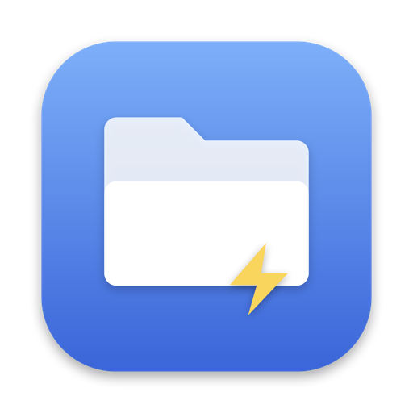

A keyboard-first, Spotlight-style file navigator for macOS. Press ⌥ Space, type a few letters, hit ↵.
Download for macOS View on GitHubmacOS 13+, Apple Silicon. Free and open source, MIT.
AppKit panel on top of a small C engine. Opens in one frame, no Electron, no dependencies.
Filters the current folder instantly. Prefix, word-boundary and camel-case matches rank first.
Type a name that doesn't exist and get "Create folder" and "Create file" rows right there.
Open with, reveal in Finder, rename inline, duplicate, copy, paste, move to Trash. Same fuzzy search.
⌘⇧V drops the selected file into the message box you came from: Telegram, Slack, Mail.
Enumerates with getattrlistbulk() off the main thread. 100,000 entries in about 150 ms, 42 bytes each.
| ⌥ Space | Show or hide the panel. Rebind it in Settings (⌘ ,). |
| ↑ ↓ | Move selection |
| → / ↵ | Enter folder, or open file with its default app |
| ← | Parent folder |
| ⌘ ↵ | Actions for the selected item |
| ⌘ C / ⌘ ⇧ C | Copy absolute path / path with ~/ |
| ⌘ ⇧ O | Open with an application, fuzzy-searched |
| ⌘ ⇧ V | Paste the selected file into the previous app |
| ⌘ R ⌘ D ⌘ ⌫ | Rename, duplicate, move to Trash |
| esc | Clear search, go back, hide |
Download the zip from the latest release, unzip, move FilePicker.app to Applications. The app is not notarized yet, so clear the quarantine flag on first launch:
xattr -dr com.apple.quarantine /Applications/FilePicker.app open /Applications/FilePicker.app
Or build from source with the Xcode Command Line Tools:
git clone https://github.com/nanot1m/my-file-picker.git cd my-file-picker && make run
No Full Disk Access needed. "Paste into app" asks for Accessibility once, from Settings.